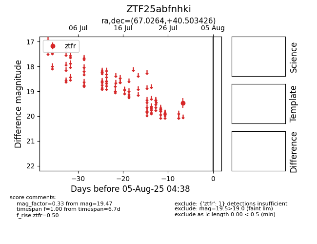

Target ZTF25abfnhki at 2025-08-05 04:38, see:
FINK: fink-portal.org/ZTF25abfnhki
Lasair: lasair-ztf.lsst.ac.uk/objects/ZTF25abfnhki
ALeRCE: alerce.online/object/ZTF25abfnhki
alt names
ZTF25abfnhki (ztf,fink)
coordinates:
equatorial (ra, dec) = (67.0264,+40.50343)
galactic (l, b) = (161.2156,-5.73969)
photometry
last ztfr=19.47
1 ztfr detections
